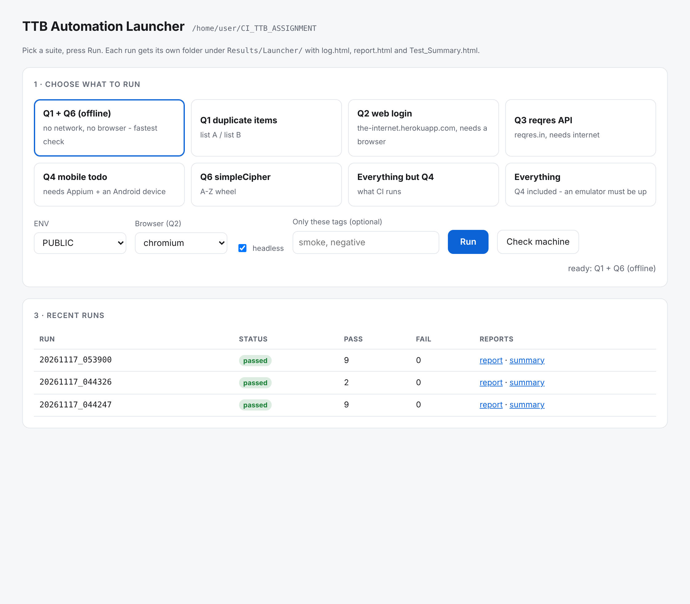

คู่มือ CI_TTB_ASSIGNMENT
Test automation — ttb (Spark) Test Automation assignment ทั้ง 6 ข้อ
Python + Robot Framework · Playwright (web) · Appium (mobile) · Jenkins
ภาพรวม 6 ข้อ
| ข้อ | โจทย์ | ไฟล์ | เครื่องมือ | ผล |
|---|---|---|---|---|
| 1 | หา duplicate ระหว่าง List A / List B | Testcase/Q1_Duplicate_Items.robot | Python | 3/3 |
| 2 | Login the-internet.herokuapp.com | Testcase/Q2_Web_Login.robot | Browser (Playwright) | 3/3 |
| 3 | GET API reqres.in | Testcase/Q3_Api_Reqres.robot | RequestsLibrary | 2/2 |
| 4 | Mobile: Minimal-Todo | Testcase/Q4_Mobile_Todo.robot | Appium | 12 เคส |
| 5 | Jenkins pipeline | Jenkinsfile | Declarative | 3 stages |
| 6 | simpleCipher | Testcase/Q6_Simple_Cipher.robot | Python | 6/6 |
เอกสารออกแบบ test case อยู่ใน Test_Case_Design.md
1 · ติดตั้ง (เครื่องใหม่ที่ยังไม่มีอะไรเลย)
Windows — ทางลัด
bat_file\Launcher\Setup.batไฟล์เดียวจบ ทำให้ 5 อย่าง:
- หา Python 3.10+ ไม่เจอก็ติดตั้งให้เองด้วย
winget(ลงแบบ user ไม่ต้องใช้สิทธิ์ admin) pip install -r Resources\Launcher\requirements.txtrfbrowser initติดตั้งฝั่ง node ของ Browser library + โหลด chromium- ตรวจเครื่องด้วย
setup_check.py - สร้าง shortcut “TTB Automation Launcher” บน Desktop
-v BROWSER_EXECUTABLE:<path> ตอนรันแทนได้Linux / macOS
python3 -m venv .venv && source .venv/bin/activate
pip install -r Resources/Launcher/requirements.txt
rfbrowser initเพิ่มเติมเฉพาะข้อ 4 (mobile)
bat_file\Launcher\Setup_Android.batลงให้ครบ: Node.js → Appium + uiautomator2 driver → Android SDK → สร้าง AVD ttb_test → ตั้ง ANDROID_HOME ถาวร
2 · ตรวจว่าเครื่องพร้อมหรือยัง
bat_file\Launcher\Check_Machine.batตัวอย่างผล:
[OK ] Python - 3.13.18
[OK ] package robot - every suite
[OK ] package Browser - Q2 web
[OK ] rfbrowser node side - installed
[WARN] appium - not on PATH - run Setup_Android.bat
[OK ] https://reqres.in - HTTP 200 (Q3 api)
READY (WARN = only that one suite is affected)WARN = กระทบแค่ suite นั้น · FAIL = ต้องแก้ก่อนถึงจะรันได้
3 · Launcher — หน้าเว็บสำหรับกดรัน
ตัวช่วยหลักของโปรเจคนี้ ไม่ต้องจำคำสั่ง robot ไม่ต้องพิมพ์ path
เลือก suite แล้วกดปุ่มเดียว รันบนเครื่องตัวเอง ไม่ต้องต่อ server ที่ไหน
3.1 เปิดยังไง
ดับเบิลคลิก shortcut “TTB Automation Launcher” บน Desktop
(Setup.bat สร้างให้ตอนติดตั้ง) หรือเปิดเองที่:
bat_file\Launcher\Start.batหน้าต่าง console จะเปิดขึ้นมาแล้วเด้ง browser ไปที่
http://127.0.0.1:8810/ ให้อัตโนมัติ
Ctrl+C หรือปิดหน้าต่างเพื่อหยุด3.2 หน้าตาและส่วนประกอบ

| ส่วน | ทำอะไร |
|---|---|
| 1 · Choose what to run | การ์ด 8 ใบให้เลือกว่าจะรันอะไร กดแล้วขอบจะเป็นสีน้ำเงิน |
| 2 · Current run | โผล่ตอนกด Run — เลข PASS/FAIL/SKIP + console สด + ลิงก์ report |
| 3 · Recent runs | ประวัติรอบก่อน ๆ พร้อมลิงก์ report และ summary |
3.3 การ์ดแต่ละใบรันอะไร
| การ์ด | รันอะไร | ใช้ตอนไหน |
|---|---|---|
| Q1 + Q6 (offline) | ข้อ 1 + ข้อ 6 | เร็วสุด ~10 วินาที ไม่ต้องใช้เน็ต — เหมาะกับการ demo |
| Q1 duplicate items | ข้อ 1 อย่างเดียว | เจาะดูเฉพาะข้อ |
| Q2 web login | ข้อ 2 | ต้องมี browser + เน็ต |
| Q3 reqres API | ข้อ 3 | ต้องมีเน็ต |
| Q4 mobile todo | ข้อ 4 | ปลุก emulator + appium ให้เอง |
| Q6 simpleCipher | ข้อ 6 อย่างเดียว | เจาะดูเฉพาะข้อ |
| Everything but Q4 | ทุก suite ยกเว้น mobile | เหมือนที่ CI รัน |
| Everything | ทุกอย่างรวม Q4 | ต้องมี emulator พร้อม |
3.4 ตัวเลือกก่อนกด Run
| ช่อง | ความหมาย | ค่าแนะนำ |
|---|---|---|
| ENV | environment จาก env_config.py | PUBLIC |
| Browser (Q2) | chromium / firefox / webkit — มีผลเฉพาะข้อ 2 | chromium |
| headless | ติ๊ก = ไม่เปิดหน้าต่าง browser ให้เห็น · เอาติ๊กออก = เห็น browser ทำงานจริง | ติ๊กไว้ (เร็วกว่า) · เอาออกตอน demo |
| Only these tags | กรองเฉพาะ tag ที่ใส่ คั่นด้วย comma เช่น smoke, negative | เว้นว่าง = รันหมด |
3.5 ขั้นตอนใช้งานจริง
- เปิด
Start.bat→ รอ browser เด้ง - กด Check machine ก่อน (ครั้งแรกบนเครื่องใหม่) → ดูว่าขาดอะไรไหม
- เลือกการ์ด เช่น Q1 + Q6 (offline) → ขอบเปลี่ยนเป็นสีน้ำเงิน มุมขวาขึ้น
ready: ... - กด Run
- กล่อง Current run โผล่ขึ้นมา console ไหลสดทุก 1.5 วินาที
- จบแล้วป้ายสถานะเปลี่ยนเป็น passed หรือ failed
พร้อมลิงก์
report.htmlและTest_Summary.html - รอบนั้นจะไปโผล่ในตาราง Recent runs ด้วย
3.6 ผลลัพธ์เก็บไว้ที่ไหน
ทุกรอบได้โฟลเดอร์ของตัวเอง ไม่ทับกัน:
3.7 ปุ่ม Check machine
รัน setup_check.py แล้วแสดงผลในหน้าเดียวกัน ตรวจครบ: Python,
package ทุกตัว, ฝั่ง node ของ Browser library, Android SDK / appium / device,
ไฟล์ APK และการต่อเน็ตไปยัง 2 เว็บที่ใช้เทสต์
3.8 เลือก Q4 แล้วเกิดอะไรขึ้น
หน้าเว็บจะขึ้นหมายเหตุเตือนทันทีที่เลือก และตอนกด Run จะ:
- ปลุก emulator (ถ้ายังไม่มี device) แล้วรอจน boot เสร็จจริง
- ปลุก Appium server (ถ้ายังไม่ตอบ) แล้วรอจนพร้อม
- ค่อยเริ่มรันเทสต์
ถ้าขาดอะไร จะเขียนบอกใน console แล้วจบรอบนั้นด้วยสถานะ failed ไม่ปล่อยให้เทสต์ fail แบบงง ๆ
3.9 ตัวเลือกขั้นสูง
| ตัวแปร | ทำอะไร | ตัวอย่าง |
|---|---|---|
LAUNCHER_PORT | เปลี่ยน port (default 8810) | set LAUNCHER_PORT=8900 ก่อนเปิด Start.bat |
RL_NO_BROWSER | ไม่ต้องเปิด browser ให้ | set RL_NO_BROWSER=1 |
3.10 Launcher ทำงานยังไงข้างใน
ความปลอดภัย: bind เฉพาะ 127.0.0.1 ไม่เปิดออกนอกเครื่อง ·
path ที่พยายามออกนอกโฟลเดอร์โปรเจคได้ 403 ·
run_id ต้องตรง pattern และ tag ต้องเป็น [\w.-]+ เท่านั้น
4 · ไฟล์ .bat ทั้งหมด (15 ไฟล์)
ตัวรันเทส — bat_file\TTB_ASSIGNMENT\
ดับเบิลคลิกได้เลย ทุกตัวสร้างโฟลเดอร์ผลใน Results\<ชื่อ>_<hhmmss>\
แล้ว gen Test_Summary.html ให้อัตโนมัติ จบแล้ว pause ค้างไว้ให้อ่านผล
| ไฟล์ | รันอะไร | Argument | ต้องมีอะไรก่อน |
|---|---|---|---|
Run_All.bat | ทุก suite ยกเว้น Q4 | [ENV] | เน็ต + browser |
Run_Offline.bat | Q1 + Q6 (tag offline) | [ENV] | ไม่ต้องใช้อะไรเลย |
Run_Q1_Duplicate.bat | ข้อ 1 duplicate items | [ENV] | — |
Run_Q2_Web_Login.bat | ข้อ 2 web login | [ENV] | browser + เน็ต |
Run_Q3_Api_Reqres.bat | ข้อ 3 REST API | [ENV] | เน็ต |
Run_Q4_Mobile_Todo.bat | ข้อ 4 mobile (ปลุก emulator + appium เอง) | [ENV] [AVD] [tag] | Android stack + APK |
Run_Q6_Cipher.bat | ข้อ 6 simpleCipher | [ENV] | — |
ENV ไม่ใส่ = PUBLIC เช่น Run_Q4_Mobile_Todo.bat PUBLIC ttb_test smoke
Run_Offline.bat — เสร็จใน ~10 วินาที ไม่ต้องพึ่งเน็ตหรือ browserติดตั้ง / ดูแลเครื่อง — bat_file\Launcher\
| ไฟล์ | ทำอะไร | รันเมื่อไหร่ |
|---|---|---|
Setup.bat | Python (winget) → pip → rfbrowser init → ตรวจเครื่อง → shortcut | ครั้งแรกบนเครื่องใหม่ |
Setup_Android.bat | Node + Appium + Android SDK → สร้าง AVD | ครั้งแรก ถ้าจะรันข้อ 4 |
Start.bat | เปิดหน้าเว็บ Launcher | ทุกครั้งที่อยากกดรันผ่านหน้าเว็บ |
Check_Machine.bat | ตรวจอย่างเดียว ไม่ติดตั้งอะไร | เวลาเทสต์พังแล้วไม่รู้ว่าขาดอะไร |
Start_Android_Stack.bat | ปลุก emulator + appium ค้างไว้ | รันข้อ 4 หลายรอบติด ๆ |
Stop_Android_Stack.bat | ปิดเฉพาะตัวที่สคริปต์เปิด | เลิกใช้แล้ว |
Run_Batch.bat | ตัวกลางที่หน้าเว็บ Launcher เรียก | ไม่ต้องกดเอง |
ตัวช่วย — bat_file\
| ไฟล์ | ทำอะไร |
|---|---|
load_credentials.bat |
อ่าน Resources\Settings\credentials.env เข้า environment ของหน้าต่างนั้น ·
ไม่ต้องกดเอง ทุก bat เรียกให้ตั้งแต่บรรทัดแรก · ไม่มีไฟล์ก็ไม่ error แค่แจ้งแล้วไปต่อ |
ลำดับที่ควรรันบนเครื่องใหม่
สิ่งที่ bat ทุกตัวทำเหมือนกัน
- หา project root จาก path ตัวเอง (ตัดที่
\bat_file\) → ย้ายโฟลเดอร์ไปไหนก็ยังรันได้ call load_credentials.batโหลด config- หา Python ตามลำดับ:
launcher_python.txt→py -3→python→ ไม่เจอก็บอกให้รันSetup.bat chcp 65001+PYTHONIOENCODING=utf-8→ ภาษาไทยไม่เพี้ยน
5 · สั่ง robot เอง
robot -v ENV:PUBLIC -d Results/manual Testcase/robot -v ENV:PUBLIC --exclude Q4 -d Results/ci Testcase/เปิด browser แบบเห็นหน้าจอ:
robot -v HEADLESS:False -d Results/visible Testcase/Q2_Web_Login.robotใช้ chromium ที่มีอยู่แล้ว ไม่ให้ Playwright โหลดใหม่:
robot -v BROWSER_EXECUTABLE:C:\path\to\chrome.exe -d Results/x Testcase/Q2_Web_Login.robotTag ที่กรองได้
Q1 Q2 Q3 Q4 Q6 ·
offline · smoke · positive negative ·
crud reminder persistence settings ·
1 2 3 (priority)
6 · ข้อ 4 mobile — ทำงานยังไง
Robot ไม่ได้คุยกับมือถือตรง ๆ แต่ส่งผ่านลูกโซ่นี้:
Run_Q4_Mobile_Todo.bat ทำให้ครบวงจรเอง ไม่ต้องเปิด terminal ค้างไว้เอง:
- เช็ค APK → ไม่มีก็บอกวิธี build แล้วหยุด
- ไม่มี device → สั่ง emulator ขึ้น แล้วรอจน
sys.boot_completed = 1จริง - Appium ไม่ตอบ → สั่ง appium ขึ้น แล้วรอจน
/statusตอบ 200 - รันเทสต์ → สร้าง
Test_Summary.html - ปิดเฉพาะสิ่งที่ตัวเองเปิด — device ที่คุณเปิดเองอยู่แล้วจะไม่ถูกยุ่ง
ตั้ง TTB_KEEP_EMULATOR=1 ถ้าอยากให้ emulator ค้างไว้หลังรันเสร็จ
ค่าที่ต้องแก้ให้ตรงเครื่อง
ตัวแปร (ใน Settings.robot) | default | แก้เป็น |
|---|---|---|
${DEVICE_NAME} | emulator-5554 | ชื่อที่ adb devices แสดง |
${PLATFORM_VERSION} | 13 | adb shell getprop ro.build.version.release |
${APPIUM_SERVER} | http://127.0.0.1:4723 | เปลี่ยนเมื่อใช้ cloud device |
สร้างไฟล์ APK
git clone https://github.com/avjinder/Minimal-Todo.git
cd Minimal-Todo
gradlew assembleDebugแล้ว copy app\build\outputs\apk\debug\app-debug.apk ไปที่ Upload_file\Minimal-Todo.apk
ดูสถานะ Android ทั้งหมดในคำสั่งเดียว
python Resources\Library\android_tools.py status${APPIUM_SERVER}
แล้วเพิ่ม capability user/key ใน Open Todo App — ตัว test case ไม่ต้องแก้เลย7 · Jenkins (ข้อ 5)
Jenkinsfile ที่ root มี 3 stage ตามโจทย์ (+ stage ติดตั้ง dependency):
- Checkout Code From Git
- Install Dependencies
- Run Test Automate
- Send Result To Jenkins — Robot Framework plugin (กราฟ trend) + JUnit + archive + publishHTML
stages { } ซ้ำ 3 บล็อก ซึ่งผิด syntax ของ declarative pipeline
(Multiple occurrences of the stages section) ไฟล์นี้รวมเป็น stages เดียว
ที่มี stage 3 ตัวตามเจตนาของโจทย์ก่อนใช้จริง: ติดตั้ง plugin Robot Framework, JUnit, HTML Publisher บน Jenkins
Q4 ไม่ถูกรวมใน CI (ต้องมี emulator) — ถ้าต้องการให้เลือก parameter SUITES = all
8 · โครงสร้างโปรเจค
หลักการของโครงสร้างนี้
- Testcase import
Path_import.robotไฟล์เดียว — เพิ่ม library หรือ keyword ใหม่ แก้ที่Import\ที่เดียว - ทุก path ใช้
${CURDIR}/..ไม่มี absolute path ย้ายโฟลเดอร์แล้วยังรันได้ ${ROOT}ประกาศที่Settings.robotที่เดียว แล้ว derive ตัวอื่นต่อ- Locator แยกจาก Keyword — UI เปลี่ยนแก้ไฟล์เดียว ไม่ต้องแตะ logic
- Mobile แยก import — AppiumLibrary กับ Browser มี keyword ชื่อซ้ำ (
Click Element,Get Text) จึงไม่โหลดเข้า suite เดียวกัน
9 · Config และ secret
| ไฟล์ | ใช้ทำอะไร | commit ไหม |
|---|---|---|
Resources/Settings/Settings.robot | ตัวแปรกลาง: URL, test data, timeout, locator | ✓ |
Resources/Library/env_config.py | แปลง -v ENV:PUBLIC เป็น URL | ✓ |
Resources/Settings/credentials.env.example | template ของ credential | ✓ |
Resources/Settings/credentials.env | ค่าจริง โหลดโดย load_credentials.bat | ✗ gitignore |
เพิ่ม environment ใหม่: แก้ ENVS ใน env_config.py แล้วเรียกด้วย -v ENV:<ชื่อ>
credentials.env ที่มีค่าจริงขึ้น repo สาธารณะ10 · ผลการรันบนเครื่องที่พัฒนา
| Suite | ผล |
|---|---|
| Q1 Duplicate Items | 3/3 PASS |
| Q6 Simple Cipher | 6/6 PASS |
| Q3 Api Reqres | 2/2 PASS |
| Q2 Web Login | 3/3 PASS |
| Q4 Mobile Todo | 12 tests — --dryrun ผ่านหมด (ยังไม่ได้รันจริงเพราะไม่มี Android device บนเครื่องที่พัฒนา) |
| รวม | 14/14 PASS + 12 dryrun |
11 · ปัญหาที่เจอบ่อย
| อาการ | สาเหตุ / วิธีแก้ |
|---|---|
Executable doesn't exist at .../headless_shell | ยังไม่ได้ rfbrowser init หรือ chromium คนละเวอร์ชัน → รัน rfbrowser init หรือใช้ -v BROWSER_EXECUTABLE:<path> |
| Q3 ได้ 401 ทุกเคส | reqres.in ไม่ได้รับ header x-api-key → ตรวจ REQRES_API_KEY ใน env_config.py |
| Q2 ต่อเว็บไม่ได้ | เครือข่ายองค์กรบล็อก → ใช้ https:// และเปิด allowlist ของ the-internet.herokuapp.com |
Keyword with same name defined multiple times | โหลด AppiumLibrary กับ Browser พร้อมกัน → Q4 ต้อง import Mobile_import.robot เท่านั้น |
Q4 Could not find a connected Android device | ยังไม่ได้เปิด emulator หรือ appium ไม่ได้รัน → ใช้ Run_Q4_Mobile_Todo.bat ที่ปลุกให้เอง |
| Launcher เปิดไม่ขึ้น / port ชน | ตั้ง LAUNCHER_PORT=8900 แล้วรันใหม่ |
ลง robotframework-appiumlibrary==2.1.0 ไม่ผ่านบน Python 3.12+ | เวอร์ชันเก่าดึง kitchen ที่ build ไม่ได้ → ใช้ 3.2.1 ตาม requirements.txt |
| รัน .bat แล้วภาษาไทยเพี้ยน | ปกติ bat ตั้ง chcp 65001 ให้แล้ว ถ้ายังเพี้ยนให้เปลี่ยน font ของ console เป็น Consolas หรือ TH Sarabun |